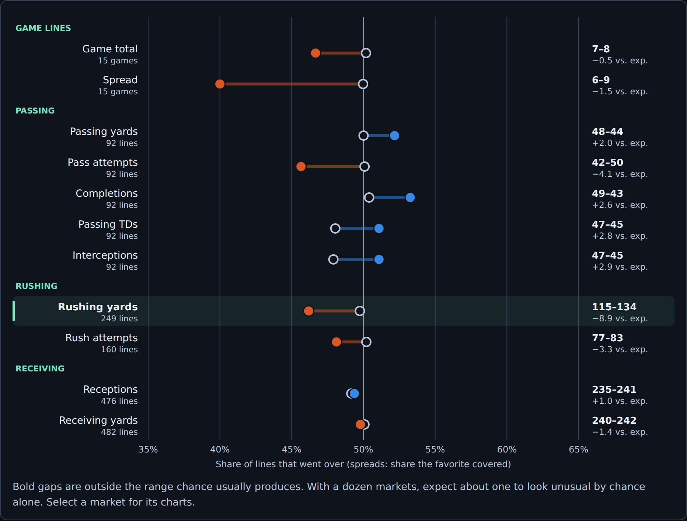
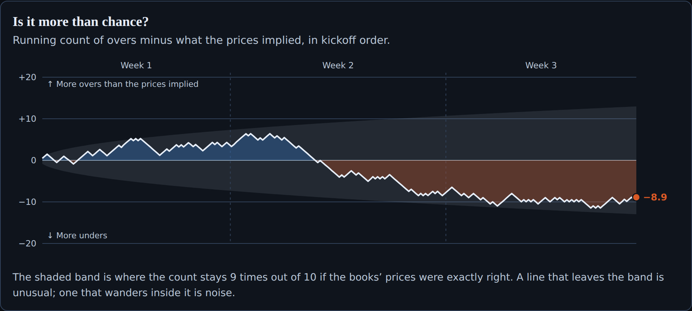
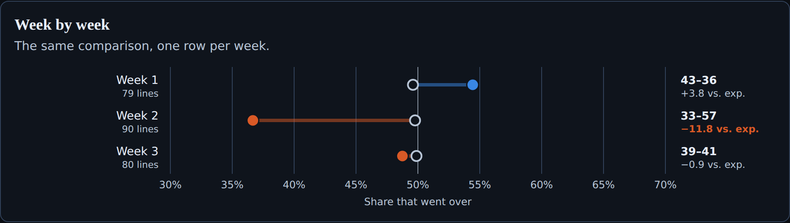

Are overs or unders hitting? Now you can check.
We graded every NFL player prop and game line we track against what the sportsbooks’ own prices implied. Three weeks in, the market has been remarkably close, with big swings from week to week.
Most of what we publish is about our models: where we think a price is wrong. Market Results is different. It doesn’t use our models and it doesn’t make picks. It answers a simpler question that every bettor asks: are overs or unders hitting this season, and is that more than the books expected?
How it works
For every player prop and game line, we take the line most sportsbooks offer and average each book’s price with its margin removed. That average is what the market expected: if the books price an over at 55%, the market expects it to win 55 times in 100. Then we compare it with the official result.
Add those expectations up and you get a fair yardstick. “Unders are 927–900” sounds like a trend. But the books’ prices implied 906 overs, so the real gap is about six bets out of 1,827: almost exactly what the market priced.
Every market at a glance
The page opens with one row per market. The hollow ring is the share of overs the prices implied; the dot is what happened. Blue means more overs than expected, orange means more unders. Receptions are the cleanest example: overs went 235–241 when the prices implied 234 overs.

Is it more than chance?
Rushing yards is the market furthest from its prices so far: unders lead 134–115, when the prices implied about 124 overs. That sounds meaningful, but chance alone produces a gap that size about one time in four.
That is what the running count is for. The line tracks overs minus what the prices implied, bet by bet. The shaded band is where luck usually keeps it. A line that stays inside the band is noise.

Week 2 was the outlier
Week by week, the swings were bigger. Week 1 leaned slightly over (312–299). Week 2 was an under week: 288 overs and 355 unders across all props, 32 fewer overs than the prices implied. Rushing overs alone went 33–57. Week 3 snapped back the other way at 300–273.

One caution. Props from the same game move together: a low-scoring game sends many players under at once. Our chance band treats each bet as independent, so a lopsided week is more common than the band suggests. Treat a single unusual week as a reason to keep watching, not as a pattern.
Betting every side loses
If you had bet one unit on every over at the average price, you’d be down about 118 units across 1,827 props. Every under: down about 95. Neither side has been a shortcut. The books’ margin is built into both.
One more detail the page makes visible: lines sit near the middle result, not the average. Receiving yards finish about 4.5 yards above the line on average, yet overs are 240–242. A few long games pull the average up without changing who wins the bet. That is why the page shows the median finish against the line.
Watch the walkthrough
Update: NHL is live
The NHL page is now live, graded back to opening night. It covers skater shots on goal, points, goals and assists, plus game totals, the puck line and the moneyline, and it adds the previous night’s games every morning.
Two nights in, the game lines have tracked the market closely. Favorites won 4 of 8 on the moneyline when the prices implied about 4.7. The skater props are where it gets lopsided: points went 41–95, assists 24–69 against about 32 implied overs, and shots on goal 60–79 against about 68.
Don’t read that as a trend yet. It is eight games, and opening night included a 1–0 overtime game and two more that finished with three goals. When a game is low-scoring, nearly every points and assists prop in it goes under together, so 136 points props behave more like a handful of big bets than 136 small ones. The page’s chance band treats each prop as independent, so for now it overstates how unusual the points gap is.
What to know before you use it
- Season or lately. Switch between the full season, the last two weeks and the last week.
- Prices are pregame snapshots. We grade against the last prices we saved before each week’s games, not closing lines. Lines can move before kickoff, and each page says when its prices were captured.
- Coverage. NFL passing, rushing and receiving props, plus game totals and spreads from Week 3. Touchdown scorer, longest-play and moneyline markets are not graded yet.
- NHL is live. Shots on goal, points, goals, assists, game totals, puck line and moneyline, graded from each game’s last saved pregame snapshot (normally the game-day morning) against official NHL statistics. Switch between the season, the last 30 days and the last 7 days.
This is a description of the market, not advice. A market that has run over for three weeks has not become an over bet. Most of these gaps are exactly the kind of noise the chance band is there to flag.
Method. Weeks 1–3 of the 2026 NFL season. Prices from our frozen weekly pregame snapshots; one main line per player and stat (the line offered by the most books), priced at the average of each book’s no-vig probability. Results from nflverse official statistics; players with no recorded usage are excluded. Units assume one unit per bet at the average offered price. NHL: regular-season games from Sep 29, 2026, priced the same way from the last snapshot saved before each game; a skater with no official appearance is excluded.